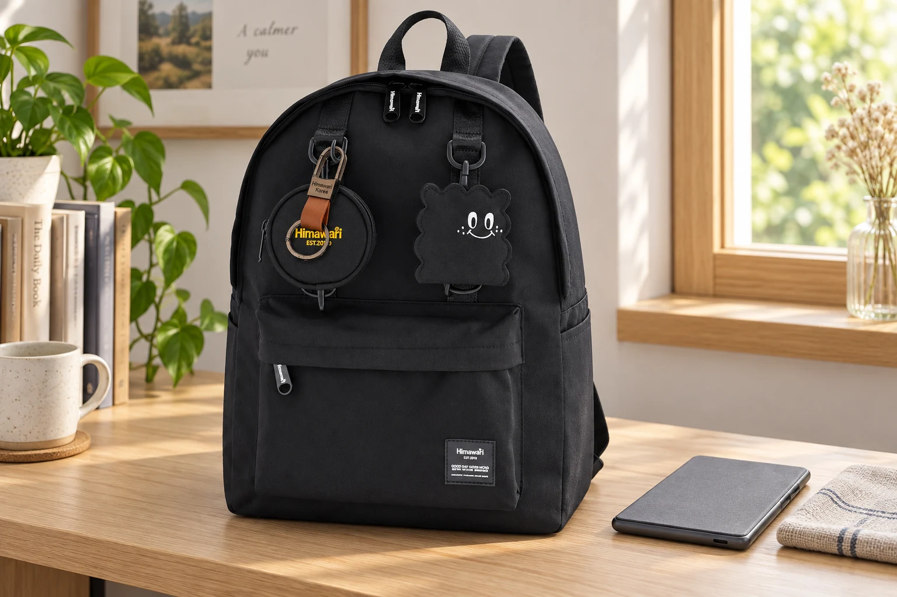

전자책 리더기를 꺼내 읽고 다시 담는 한 자리

짧게 앉아 있을 시간이 생겼을 때 읽던 책을 이어보려고 전자책 리더기를 챙길 수 있습니다. 이때는 어떤 책을 읽을지와 가방에서 기기를 어떻게 꺼낼지가 함께 정해져야 합니다. 작은 기기라고 남은 틈에 넣기보다 사용하는 커버를 포함한 모습으로 자리를 고릅니다. 읽기를 마친 뒤 다시 돌아갈 위치까지 생각하면 짧은 독서의 앞뒤 동작이 이어집니다.
출발 전에는 오늘 읽을 책을 실제로 열어봅니다. 이어갈 위치를 찾고 사용하는 기기의 상태와 필요한 준비를 확인하세요. 서비스와 기기에 따라 제공 방식이 다르므로 밖에서 바로 열릴 것이라고 기억에만 의존하지 않습니다. 잠깐의 독서에 사용할 구성과 충전 소품을 함께 가져가야 하는지는 외출 일정과 실제 기기 안내를 기준으로 정합니다.
커버를 씌운 기기가 들어갈 자리
기기의 화면 크기와 가방에 들어갈 묶음의 크기는 다릅니다. 덮개나 손잡이 부속을 사용하는 경우에는 그 상태로 봅니다. 액세서리를 분리해 이동할 수 있는지 제조사의 안내를 확인합니다. 입구에 맞추려고 기기나 커버를 구부리지 않고, 실제로 넣고 꺼내는 방향을 비교해보세요. 같은 기기라도 준비한 조합이 바뀌면 보관 자리를 다시 볼 이유가 있습니다.
빈 가방에서는 안쪽에 어떤 물건이 있는지 먼저 확인합니다. 열쇠나 충전 플러그처럼 돌출된 소품이 기기 쪽에 놓이지 않게 구분할 수 있습니다. 커버를 사용한 뒤에도 다른 물건을 넣을 때 눌리는 부분이 생기는지 봅니다. 보호 방법과 사용 가능한 조건은 기기와 커버의 안내를 따르고 외형 인상만으로 충분하다고 정하지 않습니다.
화면을 어느 방향으로 두는지 한 가지 답을 모든 가방에 적용할 필요는 없습니다. 자신의 가방 구조와 다른 짐을 놓고 실제로 맞닿는 면을 봅니다. 기기를 꺼낼 때 가장자리를 안정적으로 잡을 수 있는지, 다른 소품이 같이 따라오는지도 확인합니다. 입구에 들어가는 것과 짧은 시간에 꺼내는 것이 모두 필요한 선택입니다.
이 글에 함께 소개한 Himawari No.0422 제품 정보는 독서 외출의 가방을 살펴볼 자료입니다. 평소 가방을 계속 쓰려면 커버를 닫은 리더기와 다른 소지품을 함께 놓고 보관 위치를 고릅니다. 가방을 작은 것으로 바꾸는 날에는 이전 위치를 기대하기보다 같은 묶음을 다시 넣고 꺼내보세요. 읽고 돌아갈 한 자리가 유지되는지 보는 과정입니다.

충전선을 가져갈 경우에는 기기와 같은 틈에 느슨하게 밀어 넣지 않고 소품을 모을 자리를 정합니다. 선과 작은 부품을 함께 쓰는 조합으로 둬도 됩니다. 리더기를 꺼낼 때 선부터 풀어야 한다면 두 묶음의 위치를 바꿀 수 있습니다. 언제 사용할지 정하지 않은 큰 충전품을 계속 넣어두기보다 실제 일정에 필요한 구성을 선택합니다.
읽기를 시작하고 끝내는 순간
읽을 때에는 안정적으로 앉거나 머물 수 있는 장소를 고릅니다. 이동 중 가방을 열어 기기를 찾느라 주변을 놓치지 않도록 잠시 멈출 수 있습니다. 기기를 꺼낸 뒤 커버나 케이스를 어디에 두었는지도 알아둡니다. 독서를 시작하면서 보관품을 다른 자리에 내려놓으면 떠날 때 확인할 위치가 새로 생깁니다.
짧은 독서는 정해둔 장을 꼭 끝내야 하는 과제로 만들지 않아도 됩니다. 시간이 끝나면 이어갈 위치를 확인하고 사용하는 기기의 방식대로 읽기를 마칩니다. 멈출 자리를 남긴 뒤 보관을 시작하면 다시 펼칠 준비가 됩니다. 읽던 내용을 메모하고 싶다면 기기를 손에 든 상태로 모든 물건을 동시에 다루기보다 순서를 나누어봅니다.
커버를 닫기 전에는 안쪽에 다른 물건이 끼지 않았는지 확인합니다. 종이책에 책갈피를 넣듯 카드나 펜을 화면과 덮개 사이에 두지 않습니다. 기기의 사용과 보관 안내에 맞춰 마친 다음 가방의 정해둔 위치로 돌려놓습니다. 음료나 개인 소지품도 함께 들고 있다면 기기를 먼저 보관하고 다음 물건을 정리할 수 있습니다.
급히 이동해야 할 때에도 손에 남은 물건을 봅니다. 케이스를 꺼내놓은 자리와 기기의 위치가 달라지지 않았는지 확인합니다. 사용한 자리와 가방을 둘러보고 열린 칸을 닫은 뒤 이동하세요. 가방에 들어갔다고 보관이 끝난 것으로 생각하기 전에 기기의 커버 상태와 함께 꺼낸 소품이 돌아왔는지 볼 수 있습니다.
집에서는 외출 중 사용한 상태를 기준으로 다시 정리합니다. 필요한 충전과 관리는 기기 안내에 따르고 다음에 읽을 책을 확인할 수 있습니다. 읽지 못한 날이라면 왜 꺼내지 않았는지 생각해보세요. 머물 시간이 없었는지, 필요한 화면을 찾기 어려웠는지에 따라 다음 준비에서 바꿀 부분은 달라집니다.
여러 가방을 번갈아 쓰면 기기의 묶음은 유지하되 실제 위치를 다시 정합니다. 커버를 포함한 기기를 새로운 입구로 넣고 꺼낼 수 있는지 확인하세요. 다른 물건과 닿는 방향이 바뀌면 그 배치도 봅니다. 이전 가방의 포켓 이름을 그대로 떠올리기보다 오늘 쓰는 한 자리를 정해두면 다시 꺼낼 위치가 분명해집니다.
다음번 짧은 독서에는 읽을 책과 보관 위치를 같이 확인합니다. 가방을 열어 리더기를 꺼내고, 읽기를 마친 뒤 커버를 닫아 원래 자리로 돌려놓는 흐름을 직접 해보세요. 모서리를 잡을 공간과 다른 소품의 위치가 각각 정해져 있으면 됩니다. 잠시 읽은 대목은 기기에 남고 사용한 보관품은 같은 묶음으로 돌아와야 합니다.